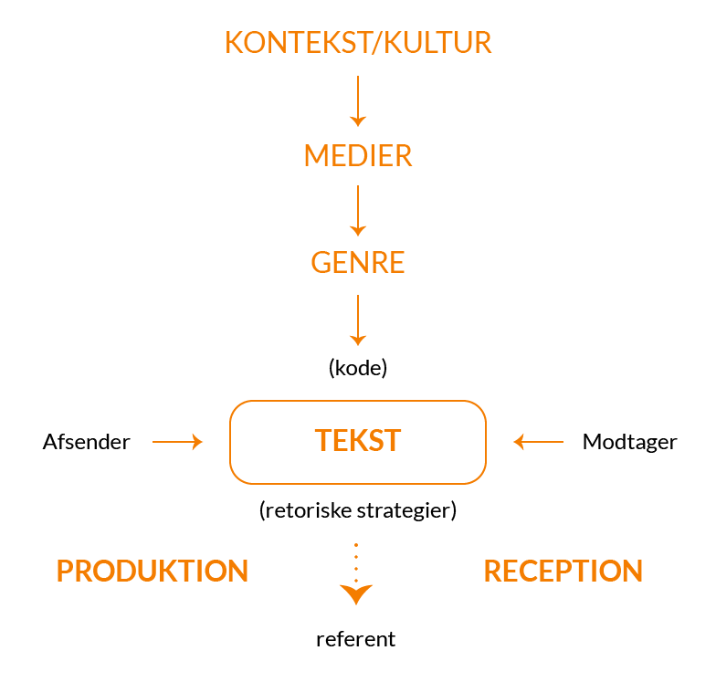
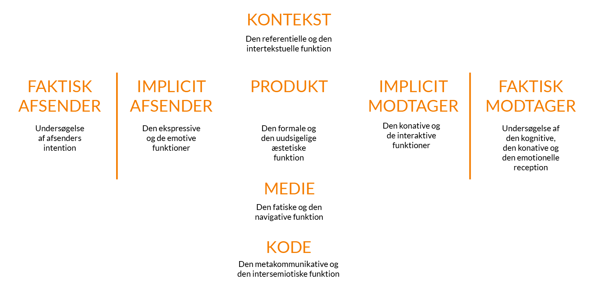
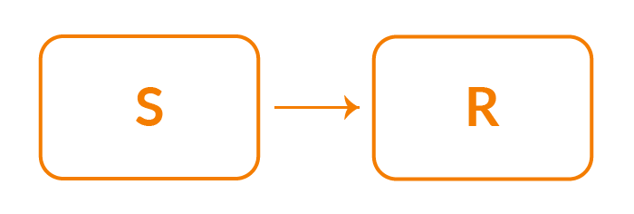
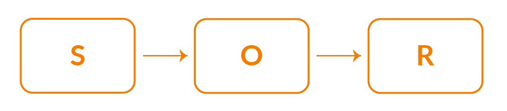
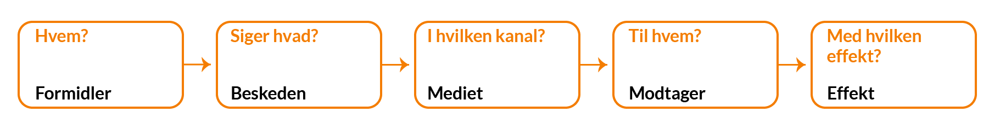

Kommunikation er noget vi allesammen gør i vores hverdag, men hvordan hænger det sammen med vores fag-område? Der findes forskellige måder vi kommunikerer på. Det kan bl.a. være måden vi går klædt på, det vi siger og gør, men også det vi ikke siger/gør. Det kan være vores kropssprog og mange andre ting. I den store sammenhæng med den måde vi kommunikerer på, handler det om indholdet der bliver afsendt og forholdet mellem afsender og modtager, og måden vi tolker hinandens kommunikation på. Mennesker kommunikerer med en digital- og en analog kode.(Kommunikation i multimediedesign, side 67, Anne Mette Busch).
Når man taler om kommunikationsteori, så er det vigtigt, at man kan forklare, hvorfor din kommunikationsløsning er den bedste. Man kan dele kommunikationsteori op i 2 forskellige paragdimer. Paradigmer kan forklares, som de mest dominerende teorier og metoder inden for et videnskabeligt arbejdsområde. Det kan også anskueliggøres som en måde at forstå og forklare verden på. Det vil altså sige, det er nogle grundlæggende antagelser om hvordan verden forholder sig, og derfra hvordan den kan undersøges.
har individet som primær fokus, altså modtageren ses som aktiv og medskabende. I dette paradigme kan dette indebære emner som f.eks. sprog, kultur, kunst osv. Man ligger et ansvar for fortolkningen af et budskab hos modtageren. Det vil sige at når afsenderen har sluppet et budskab ud overlades ansvaret for tolkning til modtageren.
Man kalder også dette paradigme for interaktionsparadigmet, da det er optaget af interaktion mellem mennesker og opfatter dem som aktivt og behovsstyret. Denne paradigme har også et par karakteristiske træk:
Den er subjektiv
Fortolkning
Kvalitativ tilgang
Induktion
Situationsbestemt
Modtagerorienteret.
Interaktion mellem mennesker
Mennesket ses som aktiv
Ligestiller afsender og modtager. Hvis der ingen modtager er til at fortolke en tekst, så eksisterer der ikke en humanistisk sammenhæng i den kommunikative forstand.
IMK-modellen som bliver kaldt for international marked kommunikation. Denne model viser at teksten eri centrum som modtager og afsender producer sammen i fællesskab. Her i modellen kan "tekst" være op til flere ting, så som video, grafik video, og kultur og medier en rolle i at udfrome denne "tekst".
Denne her model deler kommunikation op på flere elementer - Den smaler de funktionsmæssige og æstetiske aspekter ved webdesign. Denne model forklare disse aspekter og bruges til produktions- og analysesammenhæng. På samme tid bygger denne model en bro mellem de forskellige fagområder og discipliner, når man skal skabe et nyt website.
(Kommunikation i multimediedesign, side 72-73, Anne Mette Busch).
I det samfundsvidenskabelige paradigme har man afsenderen i sit fokuspunkt og vedkommende er den styrende i kommunikationsprocessen. I modsætningen til det humanistiske paradigme så har den samfundsvidenskabelige paradigme en karakteriserende tro, om at verden er uforudsigelig.
Teorigrundlaget er hentet fra en amerikansk marketingtilgang, som har udspring i økonomisk tænkning, hvor mediernes effekt på modtageren måles.
Kritikere ville sige, at de modeller og teorier som paradigmet er bygget på, har op mod 100 år på bagen. Altså at de blev til, før internettet var opfundet, og kan betragtes som den “gamle” tilgang.
Man anvender undersøgelsesmetoder, som giver målbare data, hvor man undersøger hvor mange eller hvor meget en målgruppe benytter sig af noget. Man anvender kvantitativ tilgang til disse metoder.
Udover den kvantitative tilgang til metoden, så har praradigmen også en deduktiv tilgang.
Hovedmålet med denne undersøgelse er, at kunne forudsige hvilket resultat en given handling vil medføre.
Ligesom den humanistiske paradigme, så har paradigmet også et par karakteristiske træk:
Objektivitet
Forklaring
Kvantitativ tilgang
Deduktion
Stabile omgivelser
Afsender orienteret
Transmission
Handlingsanvisende
Modtageren ses som passiv
Disse to modeller bugger på det man kalder for kanyleteroien. denne teori bygger på at man kan sprøjte ideer, tanker og holdninger ind i modtagere via propaganda, og på den måde styre samfundet.
S står for stimulus og r står for respons. Dette handler om hvordan man kan afsende et budskab og dermed efterfølge noget respons. Jo større et budskab er jo større sandsynlighed er der for at man får et kraftigere respons.
Denne model er næsten det samme som S-R modellen. O står for organisme. Her er det at bduskabet ikke føres direkte men gennem en organisme. Budskabet kan overføres på forskellige måder fordi alle mennekser ikke er ens. Her tages der hensyn til forskellige grupper og man bruger målgrupperanalyser til at kunne finde ud af hvilke hensyn der skal tages.
(Kommunikation i multimediedesign, side 78-79, Anne Mette Busch)
Lasswells beskriver den måde handling i kommunikation fungere ved at besvarer disse 5 spørgsmål:
hvem
Siger hvad
Gennem hvilken kanal
til hvem
med hvilken effekt?
Det er en sturkturmodel som ligger vægt på hvilke medie budskabet bringes i.
(Kommunikation i multimediedesign, side 79, Anne Mette Busch)